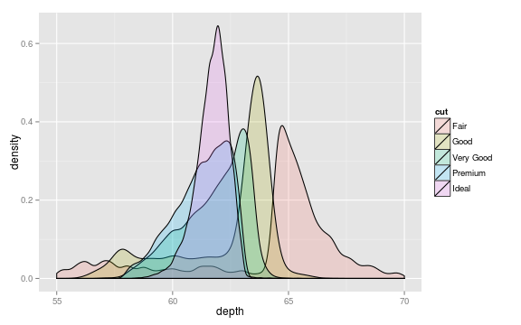

R is a free software tool designed to facilitate interactive data analysis and visualization. It has recently become the most popular platform for data analysis in the biosciences and data science community, replacing commercial software packages like SPSS and SASS. It's name is a bit of a pun on its history: R is a derivative of the commercial S-Plus, developed by Ross Ihaka and Robert Gentlemen.
R is really two related things: a powerful programming language designed for interactive data analysis and a huge community of researcher/programmers who have implemented analysis and visualization algorithms in R (for general statistical packages see CRAN; for bioinformatics and computational biology see BioConductor).
R is free software, in that it is free for anyone to install and use. At W&L we are fortunate enough to have the resources to pay expensive software licensing fees for commercial data analysis software like SPSS and Matlab, but this may not be the case for our collaborators or other researchers who would like to reproduce our work. There's a compelling argument to be made that using paid-software in basic research runs counter to our obligation to make our published data publicly available and our work reproducible.
The design of R, and of R packages, makes it impossible to hide or obfuscate) source code. As a result, the sources for all of base R, along with packages on CRAN and BioConductor, are open to scrutiny by programmers, statisticians and researchers. All programmers make mistakes, even the folks who make Excel. In the closed source world, bugs are only caught when users pin down odd behaviors in programs. When software is open source, many eyes can scrutinize the implementation of new algorithms, dramatically decreasing the likelihood that errors will make it into released software. This is probably why open source software runs the internet.
Because the R language was designed with statistics in mind, it offers many language features that make it easy to implement new data analysis algorithms. Because of this, it has become the de facto platform for the current methodological research in statistics and data science. It's usually the first choice for implementing and experimenting with new analysis methods, which means it's quite likely that a package is available for R which offers the latest and greatest approach for your research field.
There are other open source high-level scripting languages that are quite popular in research science, like Python and Perl, that offer similar sets of advantages to R. The recent rise in popularity of R in the biosciences and data science communities has likely been driven by a few simple usability features, that make it particularly easy to interactively explore data and easily produce publication-quality visualizations. If you're interested in a deep analysis of the R language, including formal semantics, this recent paper offers some great insight.
There's no getting around the fact that the learning curve for R is very steep, especially if you've never programmed or worked at a command line before. The core R software offers no user interface in the traditional desktop sense; there are no menus or buttons to click like in Excel. Over the 20 year history of the R language there have been several efforts to create a front end interfaces for R, discouraged by the original authors of the language. The fact that none have ever taken hold is likely a testament to the fact that a command line is a much more powerful environment for working with data than are clicky menus. Nonetheless, when you're used to a work flow that's menu and button driven it's hard to know where to start with a tool like R. Hopefully, though, after you've spent some time getting familiar with the R environment you'll fall in love with the power of the command line!